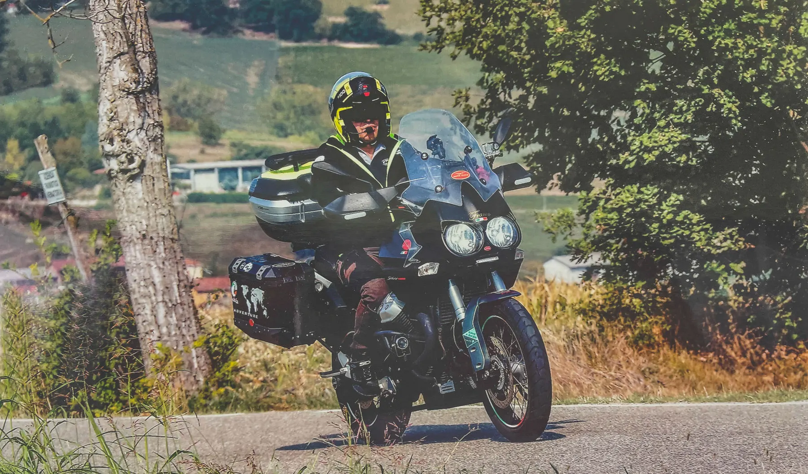
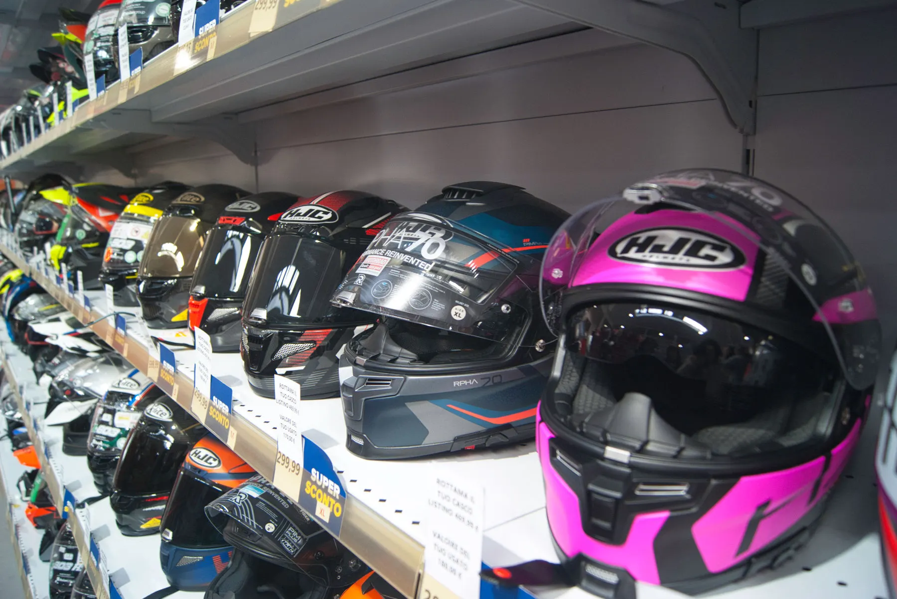
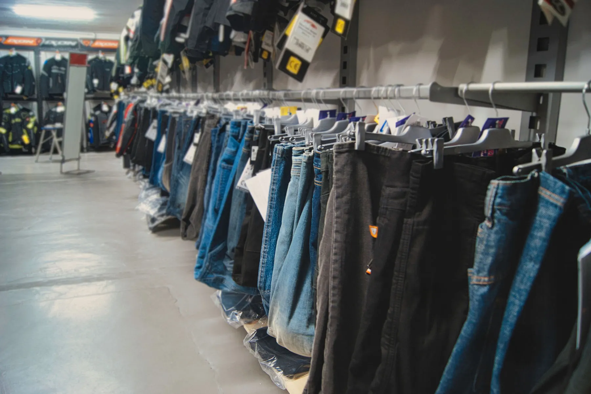
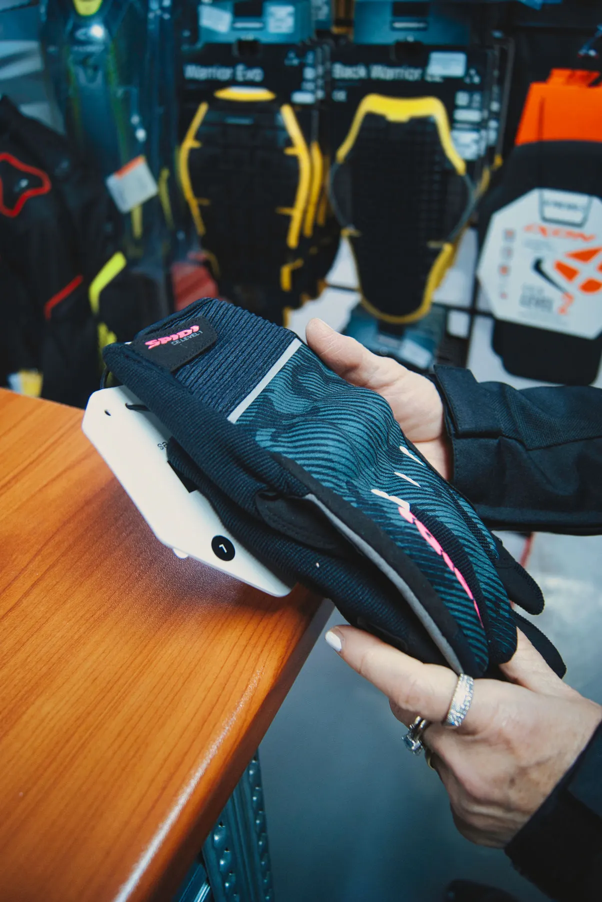
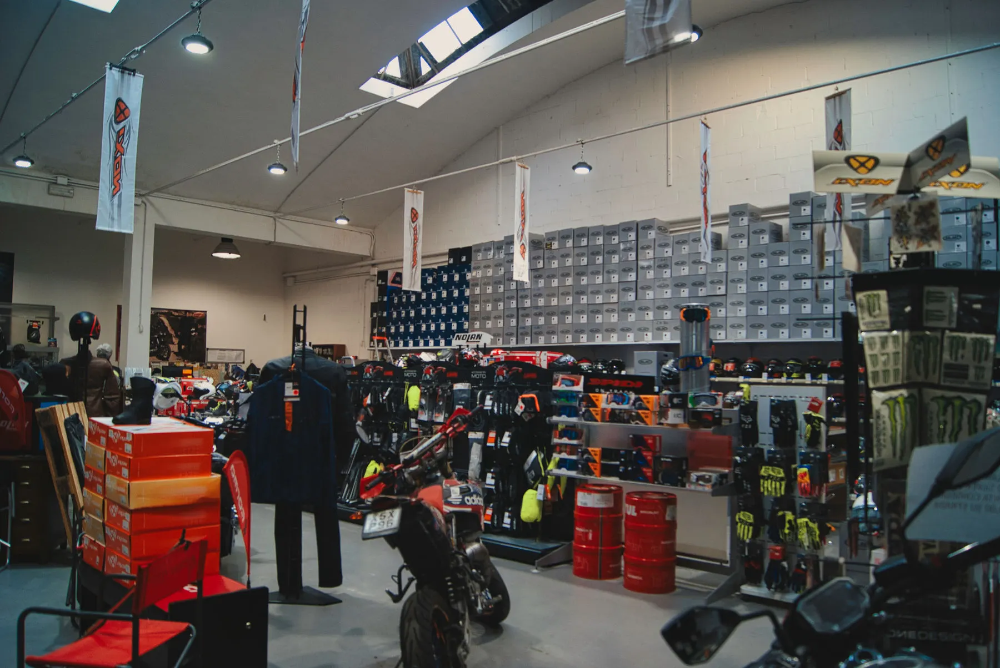
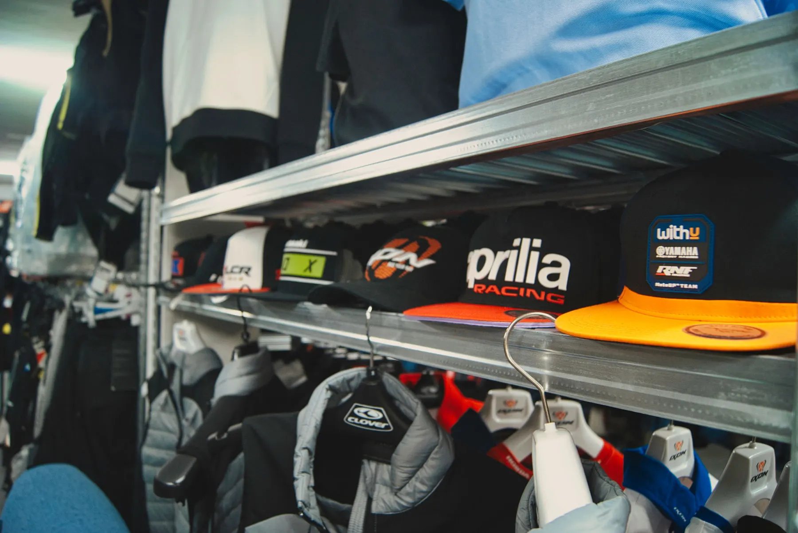

200+
Giacche e tute
Spidi, Ixon e altri marchi, con protezioni omologate. Città, viaggio o pista.

Caschi, abbigliamento e officina moto a Vercelli.
Prova in negozio, scegli con noi. Ti aspettiamo in Via Trino 200.
Tre modi per fare un giro da Motorbike.

Confronta le tipologie. Trova la calzata in negozio.
Trova il tuo tipo di casco
Nuova o usata, raccontaci la tua prossima strada.
Chiedi le proposte disponibiliTagliando, pneumatici o ricambi. Parliamone.
Richiedi un intervento
Un casco va provato. Una giacca deve lasciarti muovere. Un guanto deve stare bene sul manubrio.
In negozio puoi confrontare modelli e taglie, toccare i materiali e raccontarci come usi la moto. Ti aiutiamo a orientarti tra caschi, abbigliamento e accessori, per il tragitto di tutti i giorni o per il prossimo viaggio.
E quando c'è da prendersi cura della moto, l'officina è qui, nello stesso indirizzo. Equipaggiamento, ricambi e manutenzione: un punto di riferimento a Vercelli per te e la tua due ruote.
Una parete intera, da provare in testa.
Integrali, modulari, jet, crossover, off-road.
450 caschi. Uno è il tuo.
La forma della calotta, la taglia e la chiusura fanno la differenza. Passa a confrontare i modelli e trova quello con cui ti senti a tuo agio.
Siamo collegati con i magazzini delle marche: se la taglia non è a scaffale, la ordiniamo.
Spidi, Ixon e altri marchi, con protezioni omologate. Città, viaggio o pista.

Tessuto, pelle e jeans tecnici in tutte le taglie, da provare in camerino.

Dall'estivo traforato all'invernale imbottito. Le mani si provano sul manubrio, non in foto.
Cardo, Sena, Midland, Interphone, N-Com e HJC, da abbinare al casco giusto.

Pneumatici, scarichi, lubrificanti, navigatori e action cam. Per il cross, abbigliamento e protezioni Fox.

Cappellini, felpe e gadget dei team: il regalo giusto per chi ha già tutto.
Rivenditori diretti o autorizzati. Dallo scooter per la città all'enduro, ti aiutiamo a trovare la moto adatta a te.


Concessionario autorizzato Honda, Kawasaki e Suzuki. Ordine, consegna e primo tagliando nello stesso posto.
Le proposte cambiano nel tempo. Chiamaci per sapere quali moto puoi vedere in negozio.
Raccontaci come usi la moto e quale modello cerchi. Confrontiamo insieme le proposte.
Le foto sono un inizio. Passa a vederle, sali in sella e raccontaci che moto cerchi.
Tagliandi ufficiali, gomme e riparazioni con ricambi originali. Dietro questa serranda ci sono persone che lavorano sulle moto, ogni giorno.
Parla con l'officinaL'officina in Via Trino
Due ponti sollevatori, smontagomme e un'officina dedicata alla cura della tua moto.
Dal tagliando al cambio pneumatici, puoi parlare direttamente con chi si occuperà dell'intervento. Raccontaci che moto hai, quanti chilometri ha percorso e di cosa hai bisogno: concordiamo insieme il prossimo passo.
Qui trovi ricambi originali e prodotti per la manutenzione: lubrificanti, filtri, candele e componenti per i freni. Un servizio che continua anche dopo la scelta di un casco, di un accessorio o di una moto.

Certo. Descrivi quello che hai notato e indica marca, modello e chilometraggio. L'officina ti aiuta a concordare il prossimo passo.
Chiama il 0161 294987 e raccontaci cosa serve alla moto. Giorno, disponibilità e tempi si concordano direttamente con l'officina, in base al lavoro e ai ricambi necessari.
Trattiamo ricambi originali per Honda, Suzuki, Kawasaki, Piaggio, HM, Fantic, Kymco e Moto Guzzi. Per la manutenzione trovi prodotti Motul ed Elf, filtri Hiflofiltro e Sifam, candele NGK e materiali per i freni Newfren, Sifam, Brembo e TRW. Chiamaci per verificare il componente adatto alla tua moto.
Chi passa da Motorbike apprezza la scelta, i consigli e l’attenzione.
Una scelta ampia di moto, abbigliamento e accessori.
Disponibilità, competenza e consigli nella scelta.
Controlla gli orari
0161 294987
La mappa si carica quando la attivi.

Le moto ci portano qui.
La passione ci fa tornare.
I guzzisti vercellesi si ritrovano in Via Trino. Chiedi in negozio per uscite e iscrizioni.